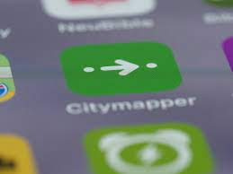
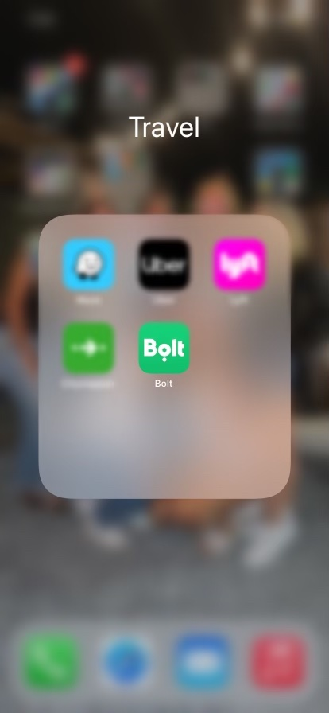
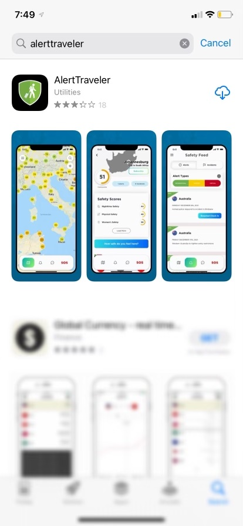
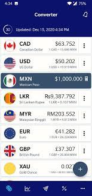

As someone who just came back from studying abroad, I think it would be extremely helpful to give some advice and tips on packing, apps to download on your phone, activities and things to do, etc. Let's start with packing!
What Should You Pack?
Important documents (passport, student visa, credit/debit cards, health insurance cards, immigration letter, etc.)
Medication (bring a full supply for however long you will be abroad for because pharmacies in other countries do not accept prescriptions written by US providers).
Adapters/converters for electronics (Europe has different outlets and so does certain countries)
Lock (depending on where you stay when traveling on the weekends you might want to lock up your stuff, example: hostels).
Weekend bag/carry-on suitcase
Appropriate clothing for the weather (versatile pieces that can be worn with lots of other things).
Umbrella/rain jacket
Reusable water bottle
Important Apps:
Citymapper --> A public transit app and mapping service. There are different modes of transportation: walking, cycling, driving, trains, buses, the tube (London), etc. It conatins simple routes with fewer transfers, cheapest route, updates in real time, gives you the most efficient way of getting to your destination, etc.
Bolt --> This app is similar to Uber and Lyft, but much cheaper throughout Europe.
AlertTraveler --> A safety travel app that sends security alerts and notifications depending on where you are.
Google Translate --> An app that translates any language (type it or take a picture of what you need translated). Extremely helpful when traveling to countries that don't speak or use English that much. I used this app when looking at menus in restaurants, communicating with locals, etc.
CurrencyConverter --> This app is extremely helpful in knowing how much money you are spending or what it costs to buy something in U.S. dollars. I would use this all the time when traveling to countries and even in London since they use the British Pound.
Airline Apps (expedia, trip.com, etc.) --> Traveling on the weekends can be a bit expensive, but there are plenty of cheap airlines and discount websites to travel the cheapest way possible. I highly recommend traveling through WizzAir or RyanAir for cheap flights throughout Europe.
What Should You Not Pack?
Mini travel items for weekend trips (mini toothbrush/shampoo/soap, etc.) --> just buy it when you get there!
Heating pads/hair straighteners/blow dryers --> Europe has different outlets and using an adapter will blow the outlet (I learned the hard way after my US heating pad blew up). I recommend just buying a cheap one once you arrive at your destination.
Towels --> Buy them when you get there so you have more room in your luggage for other items!
Several suitcases --> I recommend one carry-on, one full suitcase of your clothes, and maybe another half full suitcase so that you have room to bring home souvenirs or other items you bought while abroad.
Photos of Apps You Should Download!




Activities:
Museums --> I was not a huge museum girl growing up; however, there are so many in London alone and not all are old and historic. There are plenty of modern day museums. My favorite museum was in Switzerland, called Kunsthaus Zürich. It had a mix of everything including contemporary art exhibitions.
Walking tours/bus tours --> In London, the first night I was there we did an open roof bus tour and got to see all the major sights during the sunset and when the city was all lit up from the lights. I also did several walking tours that had different objectives and covered different topics which was interesting.
Local cuisine/restaurants/cafes --> If you are not the adventurous type it is sometimes hard to put yourself out of your comfort zone and try new foods, but I highly recommend doing it because then you are more immersed in the culture. I loved supporting smaller businesses as well. Knowing my money was helping a small business grow and succeed is powerful.